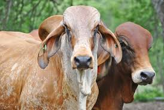

Top 1

Las vacas Brahman se caracterizan por su alta resistencia a condiciones climáticas adversas, especialmente el calor, y por su adaptabilidad a diversos ambientes. Poseen una piel suelta y la capacidad de transpirar fácilmente, lo que les ayuda a regular su temperatura corporal. Son animales dóciles con un fuerte instinto maternal y son rústicos y longevos.